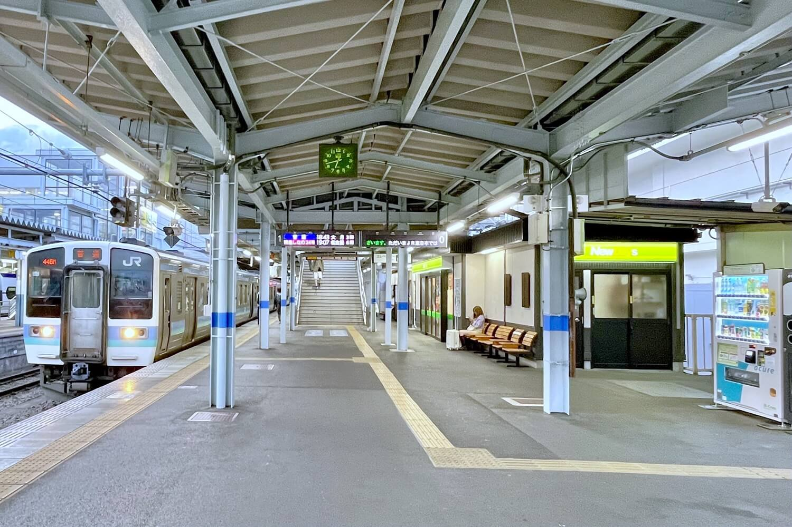
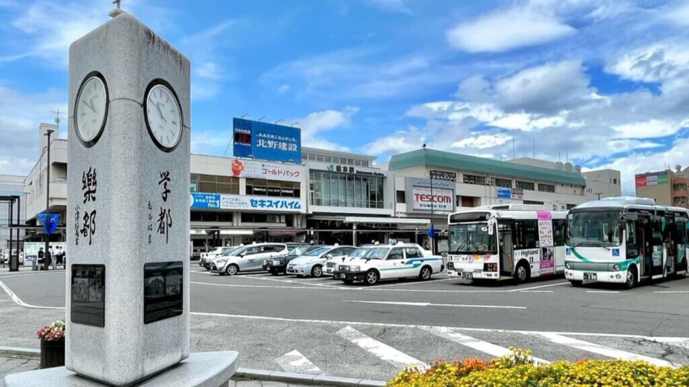

1
/
2
01
13:36
松本駅
ここから今回の旅が始まる。 荷物を預けたら、さっそく松本の街へ。

A LITTLE TRIP TO MATSUMOTO
2026 SUMMER
TRIP THEME
有名な観光地を効率よく巡る旅ではなく、 松本の街を歩いて、気になるお店に立ち寄って、 温泉に浸かって、少しだけ本を読む。
旅先で暮らすように過ごしてみる。 そんな気持ちで、1泊2日の時間を ゆっくり楽しむ旅です。
TRIP MAP
松本駅を起点に、城下町を歩いて、 少しずつ街の奥へ。 今回の旅で訪れる場所を地図にまとめました。
DAY 01
駅に着いたら、まずは街へ。 城下町の風景を眺めながら、 気になるお店を見つけていく。


01
13:36
ここから今回の旅が始まる。 荷物を預けたら、さっそく松本の街へ。

02
14:00
まずは松本らしいものをひとつ。 お腹を満たして、午後の街歩きへ。

03
15:00
女鳥羽川沿いを歩きながら、 小さなお店をのぞいてみる。 松本の街の空気を感じながら、 旅のペースを少しずつ整えていく。

04
15:30
白壁の蔵造りが残る通り。 松本らしい景色を眺めながら、 気になるお店にふらりと立ち寄る。

05
16:30
松本に来たなら、 一度はその姿を見ておきたい。 城下町を歩いてきた最後に、 国宝・松本城と向き合う時間。

06
18:00
街歩きを終えたら、 今夜の宿へ。 ここからは少しだけ、 何もしない時間を過ごす。
DAY 02
朝の静かな街を歩いて、 喫茶店でひと休み。 帰る前に、もう少しだけ松本を楽しむ。

07
MORNING
人の少ない時間に、 もう一度街を歩いてみる。 昨日とは少し違って見える 松本の朝を楽しむ。

08
10:00
本を片手に、 旅の途中でひと休み。 急がず、少しだけ長居する。

09
11:30
緑の中を歩きながら、 旅の余韻を楽しむ。 松本の街に流れる ゆっくりとした時間を感じる。

10
13:00
最後は美術館へ。 松本で過ごした時間を ゆっくり振り返りながら、 今回の旅を締めくくる。
TRAVEL LOG
旅が終わったら、 実際に撮った写真や思い出を 少しずつ残していく。
旅先で撮った
写真を残す
印象に残った
出来事を書く
また行きたい
場所を残す
UNTIL NEXT TRIP
急がず、詰め込みすぎず。 旅先で過ごす時間そのものを 楽しむ1泊2日。